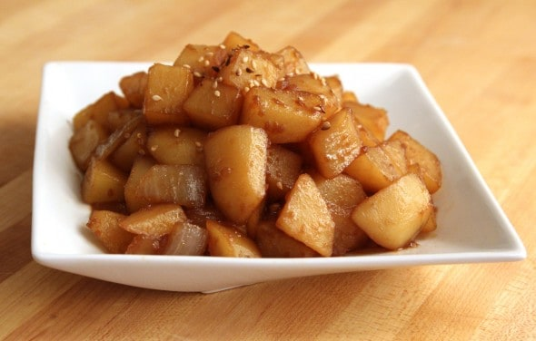
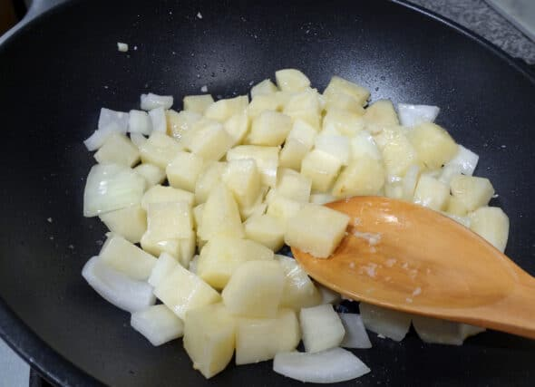
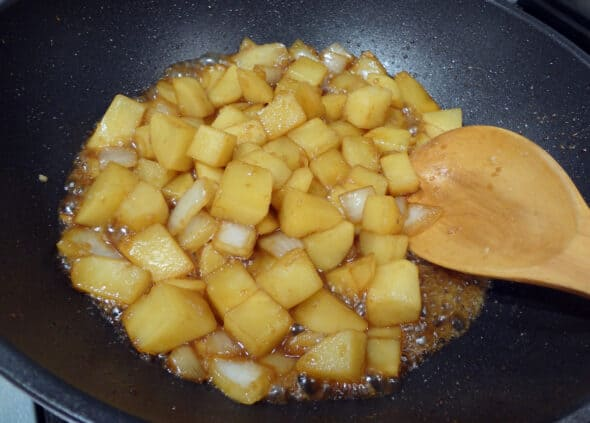

Potato & soy sauce side dish

Description
This gamja-bokkeum (stir-fried potato side dish) used to be on my regular lunch box menu. My mother sometimes added small dried anchovies and carrot, and sometimes she added ham cut into dice like potato. I used to make this all the time as my children’s lunch boxes, too.
The other recipe in this video is Gamjachae-bokkeum (stir-fried shredded potato).
Ingredients (Serves 4)
- potatoes
- onion
- 2 cloves garlic
- soy sauce
- 1 tbs corn syrup
- 1 tbs sugar
- half cup of water
Steps
- Peel the 2-3 medium sized potatoes (15 oz, or 425 grams worth). Wash and cut them into ¾ inch cubes until you have 2½ cups’ worth.
- Put the potato into a colander under running water to remove the starch.
- Cut ½ cup’s worth of onion into bite sized chunks. Set aside.
- Add 1 tbs olive oil to a heated pan. Put the potato into the pan.
- Add 2 cloves of minced garlic and sauté it until the potato looks a little translucent.

- Add the onion and keep stirring for a few minutes.
- Add a half cup of water to the pan, 2 tbs of soy sauce, and 1 tbs of corn syrup (or sugar). Mix and simmer over medium heat for about 10 minutes until the liquid is evaporated.
- Keep stirring so it doesn’t burn. Add more water if it looks like it needs some.
- When the potato is cooked, turn off the stove and add 1 tbs of toasted sesame oil. Sprinkle a pinch of sesame seeds over top and serve with rice.
